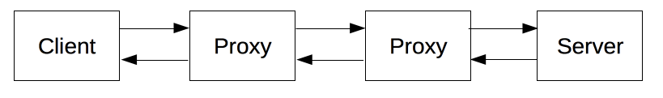
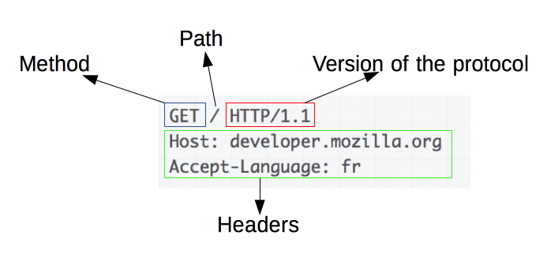

Cos'è HTTP?
Cosa fa?
Prima di tutto, HTTP è un protocollo.
HTTP è un protocollo di comunicazione che permette lo scambio di messaggi tra client (il browser) e il server tramite messaggi testuali.

I messaggi inviati dal client si chiamano request. Invece i messaggi inviati dal server sono definiti response.
I messaggi possono essere intercettati da device intermediari detti proxy che possono svolgere diverse funzioni, tra cui cache o gateway.
L'HTTP è un protocollo di livello 7 (applicazione), e si appoggia al livello di trasporto per far avvenire le effettive comunicazioni.
Lo user-agent è un entità/tool che agisce per volontà dell'utente (in questo caso quasi sempre il browser). Quello che fa è mandare un request
al server, richiedendo cosi la consegna di una certa risorsa.
Questo protocollo in genere trasporta dati come pagine web (da cui l'acronimo HyperText Transfer Protocol) ma possono essere anche immagini, dati di form, video, etc.
I messaggi
La sintassi di base di un comando HTTP-request comprende:
- Il verbo del metodo (esempi: GET, POST, OPTIONS, HEAD, PUT)
- L'URL della risorsa
- Versione del protocollo
- Header opzionali che specificano informazioni aggiuntive al server

Le informazioni restituite dal server in un messaggio HTTP-response include:
- Versione del protocollo
- Lo status code
- Una breve descrizione del significato di tale status code
- HTTP headers, simili a quelli di HTTP-request
- Il "corpo" del messaggio, se è stato richiesto dal client (spesso l'HTML di una pagina web)

Gli status code
Per comunicare il risultato della comunicazione all'utente, il server restituisce dei codici di stato nel suo messaggio HTTP-response.
Ci sono 5 categorie di codici:
- 1xx - Informativo
- 2xx - Successo
- 3xx - Redirection
- 4xx - Errore lato client
- 5xx - Errore lato server
Esempi
- 100 - Continue: Il server non ha del tutto ricevuto la richiesta del client, non l'ha ancora scartata e sta aspettando di riceverla.
- 101 - Switching Protocols: Il server indica di aver capito la richiesta del client di cambiare protocollo di comunicazione.
- 200 - OK: La richiesta è stata processata con successo
- 201 - Created: La creazione della risorsa richiesta dal client è stata completata.
- 301 - Moved Permanently: La risorsa cercata è stata spostata permanentemente. Il client deve usare il nuovo URL per richiedere tale risorsa.
- 302 - Found: La risorsa cercata dal client risiede temporaneamente su un altro URI.
- 400 - Bad Request: La richiesta è stata rifiutata per errore commessi dal client (sintassi, modalità di framing sbagliata, ecc).
- 403 - Forbidden: L'accesso della risorsa al client è stato negato al server. Il server non è obbligato a comunicare la motivazione.
- 404 - Not Found: Classico. La risorsa non è stata trovata.
- 500 - Internal Server Error: Il server ha riscontrato una condizione inaspettata che non gli permette di eseguire la richiesta.
- 501 - Not Implemented: Il server non supporta tale tipo di comando.
- 502 - Bad Gateway: Se il server funzionava da intermediario come proxy o gateway e ha riscontrato una richiesta "invalida", restituisce tale codice.
- 505 - HTTP Version Not Supported: Il server non supporta la versione di HTTP di tale messaggio, o rifiuta di processarlo per lo stesso motivo.